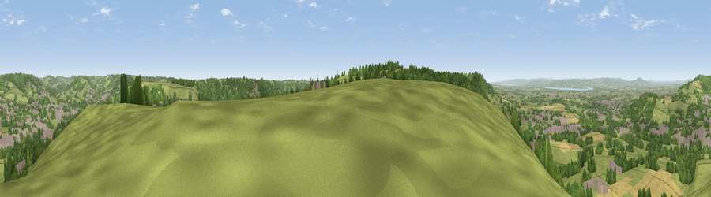

Viewpoint near Selsley
#3348 in England · top 4% of its area beats it · near SelsleyThe view, rendered

A 360° render of this exact spot computed from the terrain model, tree cover and land cover — summer colours, afternoon light, calibrated against photographs of famous viewpoints. Real trees, hedges and buildings will differ in detail.
The panorama
Grey silhouette: terrain skyline in each direction (720 bearings, Earth curvature and refraction included). Dashed green: skyline with trees (+15 m) and buildings (+8 m) as obstacles. Blue strip: how far the ground is visible on each bearing.
Where the view opens
Wedge length = distance to the farthest visible ground on that bearing (vegetation-aware). Rings at 10, 25 and 50 km.
What fills the view
46% grassland · 27% woodland · 16% cropland · 10% built-up
Angular shares of the visible panorama (visual magnitude), not map area. Landscape diversity 0.55 (0–1 Shannon).
Key numbers
More beautiful places nearby
The staircase of upgrades: each row has a higher view potential than everything closer. Driving times are estimates from straight-line distance, calibrated against real road routing — check an actual route before setting out.
| Place | Direction | Drive | Score |
|---|---|---|---|
| Viewpoint near Nympsfield | WSW · 3 km | ~8 min | 74.9 |
| Viewpoint near Nympsfield | WSW · 4 km | ~9 min | 77.5 |
| Viewpoint near Brookthorpe | NNE · 10 km | ~19 min | 78.0 |
| Painswick Beacon | NNE · 10 km | ~19 min | 79.6 |
| Viewpoint near Stinchcombe | WSW · 10 km | ~20 min | 80.5 |
| Nottingham Hill | NNE · 29 km | ~46 min | 80.9 |
| Chase End Hill | NNW · 33 km | ~51 min | 81.5 |
| Ragged Stone Hill | NNW · 34 km | ~52 min | 82.5 |
51.72703, -2.25006 · source: screening · position refined by local search. Computed location — check access rights before visiting.